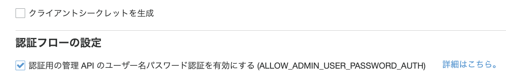
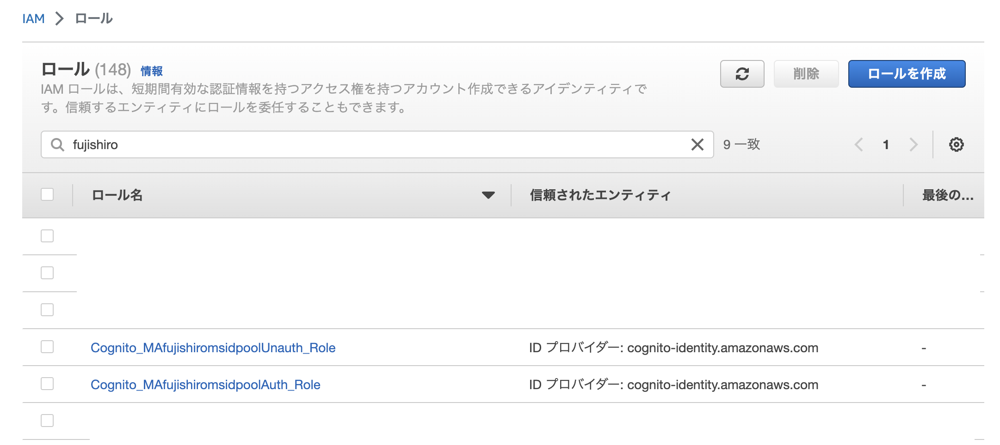
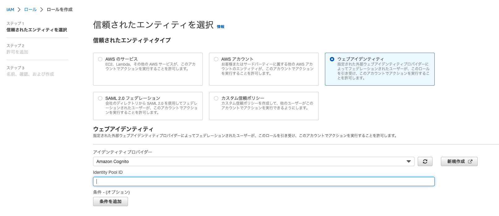
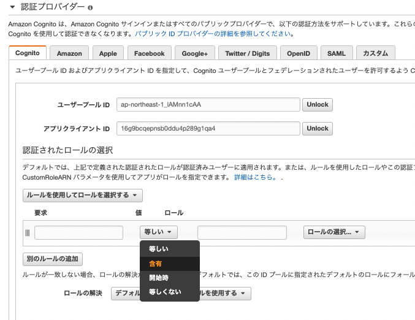

4. Cognitoで認証をして、AWSのリソースにアクセスする¶
実施手順とポイント
ConitoでUser Poolを作成する
CognitoでIDPoolを作成する
Cognitoの認証されたユーザーに対するIAM権限を設定する。
AWS CLIからログイン
Cognitoへ問い合わせしてクレデンシャルを取得する
クレデンシャルを登録して、AWS CLIからS3にアクセス
【＋α】ルールベースでIAMロールを割り当てる
4.1. 参考文献¶
クレデンシャルの取得方法
：一番参考になるAWS CLIでCognitoのクレデンシャルを取得する方法から、ルールベースで付与するIAMを変更する手順が整理されているCognito を使ったユーザ認証で S3 にアクセスしてみる
：pythonを利用して、cognitoから認証情報を受けてS3へのアクセス制御を検証しているPythonからCognitoのUSER_PASSWORD_AUTHとUSER_SRP_AUTHでのトークン取得
：pythonを利用してクレデンシャルを取得するところまで、クライアントシークレットを有効化している時に対応しているところまで整理してくれているS3 の読み書きを Cognito で認証する方法
：ディレクトリにユーザーIDを付与することで、認証したユーザーのIDを冠したディレクトリしかアクセスすることができなくなる。外部ユーザが安全かつ直接的に Amazon S3 へファイルをアップロードできるようにする方法
：amplifyを利用して、アップロードページをアップロードする方法
4.2. Cognitoでユーザープールを作成¶
詳細は別ページ参照
この時に、アプリクライアントの設定で、クライアントシークレットの作成については無効化しておき、ALLOW_ADMIN_USER_PASSWORD_AUTHを有効化する
また、test userも作成しておく（有効化してもなんとかなるけど、Cognitoへのログイン設定が面倒）

4.3. CognitoでIDプールを作成¶
idPool名
同じユーザー内で一意にする認証していないID
有効化すると、認証していないユーザーへの権限が設定可能認証プロバイダ
前節で作成したCognitoのユーザープールの情報を設定

作成したIDプールのナビゲーションペインのサンプルコードからIDプールのIDを確認できる。 後から利用するので記録しておく。

4.4. 紐づくIAMの作成¶
作成したIDpool名を冠したIAMロールが存在するはずなので、そのロールのポリシーを編集していく。

ポリシーには、Cognitoで認証したユーザーごとのバケットの中でもフェデレーティッドユーザーの ID${cognito-identity.:sub}のディレクトリに紐づいたオブジェクトにのみアクセスできるポリシーを付与数r。
{
"Version": "2012-10-17",
"Statement": [
{
"Effect": "Allow",
"Action": ["s3:ListBucket"],
"Resource": ["arn:aws:s3:::ma-fujishiroms-bucke"],
"Condition": {"StringLike": {"s3:prefix": ["cognito/"]}}
},
{
"Effect": "Allow",
"Action": [
"s3:GetObject",
"s3:PutObject",
"s3:DeleteObject"
],
"Resource": [
"arn:aws:s3:::ma-fujishiroms-bucket/cognito/${cognito-identity.amazonaws.com:sub}",
"arn:aws:s3:::ma-fujishiroms-bucket/cognito/${cognito-identity.amazonaws.com:sub}/*"
]
}
]
}
UnAuthユーザーには情報を付与しない。
4.5. AWS CLIからのアクセス¶
4.5.1. ログイン¶
AWS CLIの場合は以下のコマンドでログインする
Cognitoのユーザープールで動作確認用に2つのアカウントを作成しておく
初期設定
USER_POOL_IDはCognitoのユーザープールの全般設定から取得
CLIENT_IDはCognitoのユーザープールのアプリクライアントから取得
IDENTITY_POOL_IDはCognitoのIDプールのサンプルコードから取得（前節でメモした）
USER_POOL_ID=ap-northeast-1_xxxxxxx
CLIENT_ID=xxxxxxxxxxxx
IDENTITY_POOL_ID=ap-northeast-1:xxxxxxxxxx
USER_NAME=YOUR_USER_NAME
USER_EMAIL=YOUR_MAIL_ADDRESS@gmail.com
REGION=ap-northeast-1
PASSWORD="Dummy456"
COGNITO_USER_POOL=cognito-idp.${REGION}.amazonaws.com/${USER_POOL_ID}
ログインして、ID Tokenの取得
(USERNAMEはUSER＿NAMEでもUSER_EMAILでも認証が通った)
ID_TOKEN=$(aws cognito-idp admin-initiate-auth \
--user-pool-id ${USER_POOL_ID} \
--client-id ${CLIENT_ID} \
--auth-flow ADMIN_NO_SRP_AUTH \
--auth-parameters "USERNAME=${USER_NAME},PASSWORD=${PASSWORD}" \
--query "AuthenticationResult.IdToken" \
--output text) && echo ${ID_TOKEN}
4.5.2. クレデンシャルの取得¶
IDENTITY_IDを取得
IDENTITY_ID=$(aws cognito-identity get-id \
--identity-pool-id ${IDENTITY_POOL_ID} \
--logins "${COGNITO_USER_POOL}=${ID_TOKEN}" \
--query "IdentityId" \
--output text) && echo ${IDENTITY_ID}
Identify IDを利用して、クレデンシャルを取得
OUTPUT=$(aws cognito-identity get-credentials-for-identity \
--identity-id ${IDENTITY_ID} \
--logins "${COGNITO_USER_POOL}=${ID_TOKEN}") && echo ${OUTPUT}
返却されたクレデンシャルのAccessKeyID、SecretKey、SessionTokenを環境変数に設定
AWS_ACCESS_KEY_ID=`echo $OUTPUT | jq -r '.Credentials.AccessKeyId'`
export AWS_ACCESS_KEY_ID
AWS_SECRET_ACCESS_KEY=`echo $OUTPUT | jq -r '.Credentials.SecretKey'`
export AWS_SECRET_ACCESS_KEY
AWS_SECURITY_TOKEN=`echo $OUTPUT | jq -r '.Credentials.SessionToken'`
export AWS_SECURITY_TOKEN
4.6. S3バケットの作成¶
作成したIAMの権限に合わせて、S3バケットを作成する。
バケット内に作成するフォルダについても、cognito/CognitoUserIDとする。
UserIDは先ほどの手順でログインすることでCognitoのID poolに追加されている値を利用する

以下のようなディレクトリ構成となる
bucket
|
|--cognito
|
|--ap-northeast-1:xxxxxxxxx
|
|--ap-northeast-1:yyyyyyyyy
4.7. 動作確認¶
xxxxxxxのクレデンシャルを環境変数に設定しているときとyyyyyyyyyのクレデンシャルを環境ヘンスに設定している時で、アクセスできるS3が異なることを確認する
aws s3 cp --region ap-northeast-1 s3://ma-fujishiroms-bucket/cognito/ap-northeast-1:xxxxxxxxx/alb_setting_basic.png ./
aws s3 cp --region ap-northeast-1 s3://ma-fujishiroms-bucket/cognito/ap-northeast-1:yyyyyyyyy/auth0_tenant.png ./
4.8. ユーザーごとに紐づけるロールを変更する場合¶
4.8.1. IAMロールの作成¶
IAMのコンソール画面から、新しいロールを作成し、エンティティタイプをウェブアイデンティティにする。 プロバイダーとしてCognitoを選択して、IDプールのIDを書き込み、ポリシーを付与してロールを作成する

4.8.2. IDプールでルールを設定¶
IDプールの編集から、認証プロバイダを選択して、ルールを使用してロールを選択するから、ルール設定
例えば、「emailにxxxxを含む」などの条件で付与するIAMを変更できる
